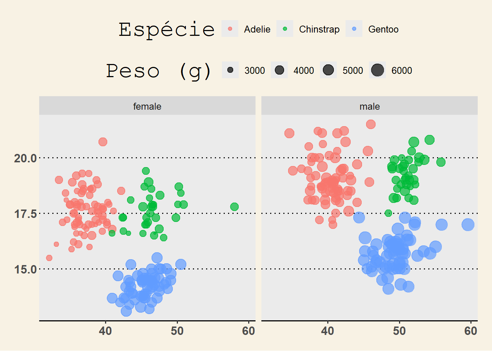

library(pacman)
p_load(tidyverse, magrittr, palmerpenguins, ggthemes)Introdução
Ao analisarmos bases de dados com muitas colunas e linhas, torna-se essencial dominar ferramentas que facilitem o manejo, a organização e a transformação dos dados. Operações como selecionar variáveis específicas, filtrar observações ou criar novas colunas fazem parte da rotina de qualquer análise.
Características do pacote dplyr
- Rename: Renomear coluna
- Slice: Selecionar linhas
- Select: Comparação sistemática de algoritmos
- Filter: Análise de diferentes propriedades do solo
- Relocate: Modificar a coluna
- Arrange: Organizar os dados de forma sequêncial
- Summarise: Realizar métricas com os dados
- pivot longer: Manipulação dos dados
Algumas pessoas recorrem a softwares ou linguagens voltadas exclusivamente para bancos de dados (como SQL). No entanto, o R se destaca por permitir que toda a etapa de manipulação esteja integrada à análise estatística e à visualização de dados.
Neste post, apresento um guia didático e progressivo sobre a manipulação de dados com o pacote dplyr, parte do ecossistema tidyverse.
Instalação e carregamento dos pacotes
pinguim <- dplyr::as_tibble(palmerpenguins::penguins)Renomeando colunas com rename()
pinguim <- pinguim %>%
rename(
Especies = species,
Ilha = island,
Tamanho_Bico_mm = bill_length_mm,
Espessura_Bico_mm = bill_depth_mm,
Nadadeira_mm = flipper_length_mm,
Peso_g = body_mass_g,
Sexo = sex,
Ano = year
)Selecionando linhas com slice()
pinguim %>%
slice(1:20)# A tibble: 20 × 8
Especies Ilha Tamanho_Bico_mm Espessura_Bico_mm Nadadeira_mm Peso_g Sexo
<fct> <fct> <dbl> <dbl> <int> <int> <fct>
1 Adelie Torgers… 39.1 18.7 181 3750 male
2 Adelie Torgers… 39.5 17.4 186 3800 fema…
3 Adelie Torgers… 40.3 18 195 3250 fema…
4 Adelie Torgers… NA NA NA NA <NA>
5 Adelie Torgers… 36.7 19.3 193 3450 fema…
6 Adelie Torgers… 39.3 20.6 190 3650 male
7 Adelie Torgers… 38.9 17.8 181 3625 fema…
8 Adelie Torgers… 39.2 19.6 195 4675 male
9 Adelie Torgers… 34.1 18.1 193 3475 <NA>
10 Adelie Torgers… 42 20.2 190 4250 <NA>
11 Adelie Torgers… 37.8 17.1 186 3300 <NA>
12 Adelie Torgers… 37.8 17.3 180 3700 <NA>
13 Adelie Torgers… 41.1 17.6 182 3200 fema…
14 Adelie Torgers… 38.6 21.2 191 3800 male
15 Adelie Torgers… 34.6 21.1 198 4400 male
16 Adelie Torgers… 36.6 17.8 185 3700 fema…
17 Adelie Torgers… 38.7 19 195 3450 fema…
18 Adelie Torgers… 42.5 20.7 197 4500 male
19 Adelie Torgers… 34.4 18.4 184 3325 fema…
20 Adelie Torgers… 46 21.5 194 4200 male
# ℹ 1 more variable: Ano <int>Selecionando colunas com select()
pinguim %>%
select(Especies, Ilha, Peso_g)# A tibble: 344 × 3
Especies Ilha Peso_g
<fct> <fct> <int>
1 Adelie Torgersen 3750
2 Adelie Torgersen 3800
3 Adelie Torgersen 3250
4 Adelie Torgersen NA
5 Adelie Torgersen 3450
6 Adelie Torgersen 3650
7 Adelie Torgersen 3625
8 Adelie Torgersen 4675
9 Adelie Torgersen 3475
10 Adelie Torgersen 4250
# ℹ 334 more rowsCriando variáveis com mutate()
pinguim %>%
mutate(Relacao_Bico = Tamanho_Bico_mm / Espessura_Bico_mm) %>%
select(Especies, Ilha, Relacao_Bico)# A tibble: 344 × 3
Especies Ilha Relacao_Bico
<fct> <fct> <dbl>
1 Adelie Torgersen 2.09
2 Adelie Torgersen 2.27
3 Adelie Torgersen 2.24
4 Adelie Torgersen NA
5 Adelie Torgersen 1.90
6 Adelie Torgersen 1.91
7 Adelie Torgersen 2.19
8 Adelie Torgersen 2
9 Adelie Torgersen 1.88
10 Adelie Torgersen 2.08
# ℹ 334 more rowsFiltrando dados com filter()
pinguim %>%
filter(Peso_g > 1000, Espessura_Bico_mm > 10)# A tibble: 342 × 8
Especies Ilha Tamanho_Bico_mm Espessura_Bico_mm Nadadeira_mm Peso_g Sexo
<fct> <fct> <dbl> <dbl> <int> <int> <fct>
1 Adelie Torgers… 39.1 18.7 181 3750 male
2 Adelie Torgers… 39.5 17.4 186 3800 fema…
3 Adelie Torgers… 40.3 18 195 3250 fema…
4 Adelie Torgers… 36.7 19.3 193 3450 fema…
5 Adelie Torgers… 39.3 20.6 190 3650 male
6 Adelie Torgers… 38.9 17.8 181 3625 fema…
7 Adelie Torgers… 39.2 19.6 195 4675 male
8 Adelie Torgers… 34.1 18.1 193 3475 <NA>
9 Adelie Torgers… 42 20.2 190 4250 <NA>
10 Adelie Torgers… 37.8 17.1 186 3300 <NA>
# ℹ 332 more rows
# ℹ 1 more variable: Ano <int>Reorganizando colunas com relocate()
pinguim %>%
relocate(Ilha, Sexo, Especies)# A tibble: 344 × 8
Ilha Sexo Especies Tamanho_Bico_mm Espessura_Bico_mm Nadadeira_mm Peso_g
<fct> <fct> <fct> <dbl> <dbl> <int> <int>
1 Torgers… male Adelie 39.1 18.7 181 3750
2 Torgers… fema… Adelie 39.5 17.4 186 3800
3 Torgers… fema… Adelie 40.3 18 195 3250
4 Torgers… <NA> Adelie NA NA NA NA
5 Torgers… fema… Adelie 36.7 19.3 193 3450
6 Torgers… male Adelie 39.3 20.6 190 3650
7 Torgers… fema… Adelie 38.9 17.8 181 3625
8 Torgers… male Adelie 39.2 19.6 195 4675
9 Torgers… <NA> Adelie 34.1 18.1 193 3475
10 Torgers… <NA> Adelie 42 20.2 190 4250
# ℹ 334 more rows
# ℹ 1 more variable: Ano <int>Ordenando dados com arrange()
pinguim %>%
select(Especies, Ilha, Peso_g) %>%
arrange(desc(Peso_g))# A tibble: 344 × 3
Especies Ilha Peso_g
<fct> <fct> <int>
1 Gentoo Biscoe 6300
2 Gentoo Biscoe 6050
3 Gentoo Biscoe 6000
4 Gentoo Biscoe 6000
5 Gentoo Biscoe 5950
6 Gentoo Biscoe 5950
7 Gentoo Biscoe 5850
8 Gentoo Biscoe 5850
9 Gentoo Biscoe 5850
10 Gentoo Biscoe 5800
# ℹ 334 more rowsAgregando dados com group_by() e summarise()
pinguim %>%
group_by(Ilha, Especies) %>%
summarise(
Peso_Maximo = max(Peso_g, na.rm = TRUE),
Media_Nadadeira = mean(Nadadeira_mm, na.rm = TRUE),
.groups = "drop"
)# A tibble: 5 × 4
Ilha Especies Peso_Maximo Media_Nadadeira
<fct> <fct> <int> <dbl>
1 Biscoe Adelie 4775 189.
2 Biscoe Gentoo 6300 217.
3 Dream Adelie 4650 190.
4 Dream Chinstrap 4800 196.
5 Torgersen Adelie 4700 191.Reestruturando dados com pivot_longer()
pinguim_long <- pinguim %>%
select(Especies, Sexo, Tamanho_Bico_mm, Espessura_Bico_mm, Nadadeira_mm) %>%
pivot_longer(
cols = c(Tamanho_Bico_mm, Espessura_Bico_mm, Nadadeira_mm),
names_to = "Variavel",
values_to = "Valor"
)
pinguim_long# A tibble: 1,032 × 4
Especies Sexo Variavel Valor
<fct> <fct> <chr> <dbl>
1 Adelie male Tamanho_Bico_mm 39.1
2 Adelie male Espessura_Bico_mm 18.7
3 Adelie male Nadadeira_mm 181
4 Adelie female Tamanho_Bico_mm 39.5
5 Adelie female Espessura_Bico_mm 17.4
6 Adelie female Nadadeira_mm 186
7 Adelie female Tamanho_Bico_mm 40.3
8 Adelie female Espessura_Bico_mm 18
9 Adelie female Nadadeira_mm 195
10 Adelie <NA> Tamanho_Bico_mm NA
# ℹ 1,022 more rowsExemplo integrado
pinguim %>%
select(Especies, Ilha, Peso_g) %>%
arrange(desc(Peso_g)) %>%
slice(1:10)# A tibble: 10 × 3
Especies Ilha Peso_g
<fct> <fct> <int>
1 Gentoo Biscoe 6300
2 Gentoo Biscoe 6050
3 Gentoo Biscoe 6000
4 Gentoo Biscoe 6000
5 Gentoo Biscoe 5950
6 Gentoo Biscoe 5950
7 Gentoo Biscoe 5850
8 Gentoo Biscoe 5850
9 Gentoo Biscoe 5850
10 Gentoo Biscoe 5800Visualização dos dados
ggplot(data = na.omit(pinguim), aes(x = Tamanho_Bico_mm, y = Espessura_Bico_mm)) +
geom_point(aes(color = Especies, size = Peso_g), alpha = 0.7) +
facet_wrap(~Sexo) +
labs(
x = "Tamanho do bico (mm)",
y = "Espessura do bico (mm)",
color = "Espécie",
size = "Peso (g)"
) +
theme_light() +
theme_wsj()
Referências
- Wickham et al. (2019). Welcome to the tidyverse. JOSS.
- Horst et al. (2020). palmerpenguins.